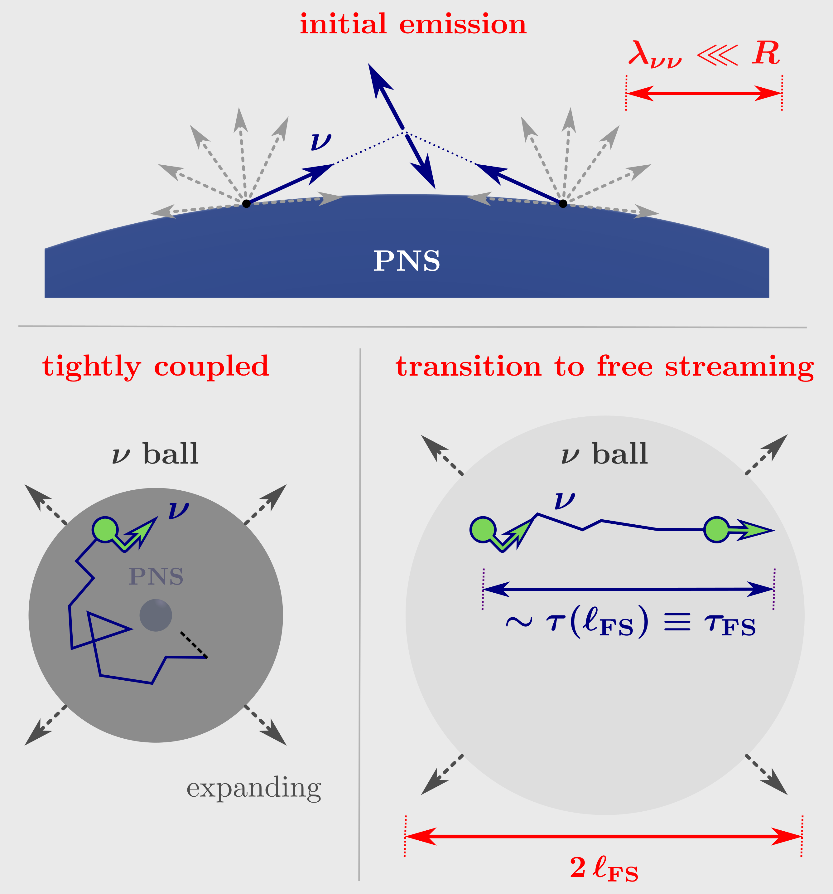
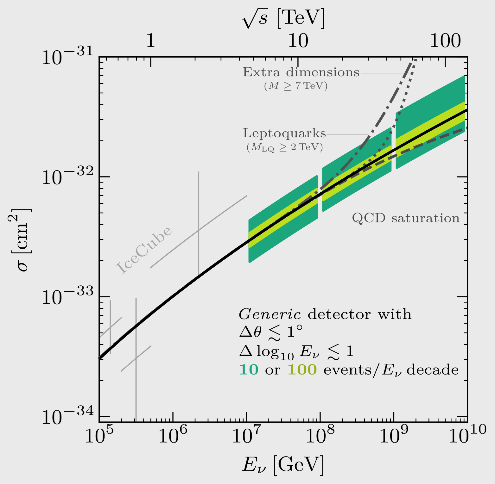
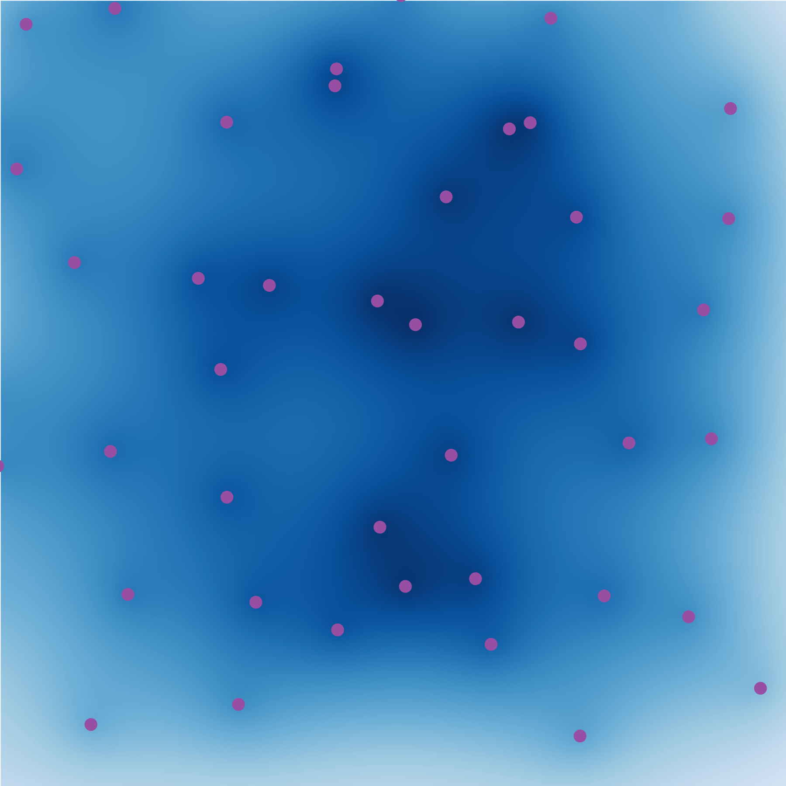
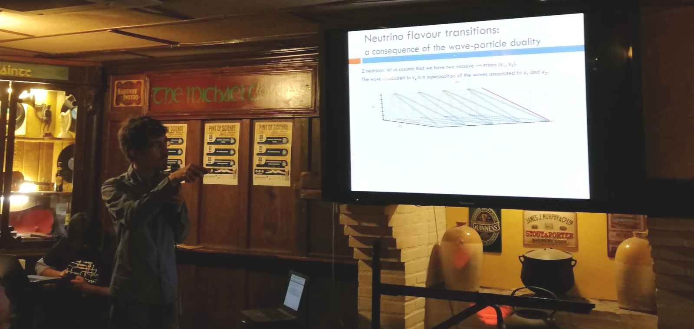

About Me
I was born and raised in the beautiful city of Bilbao, Basque Country, Spain. Since I was a kid, I have been fascinated by understanding natural phenomena.
That led me to studying physics at the University of The Basque Country. I then moved to Barcelona to study a Master's in Astrophysics, Particle Physics, and Cosmology. After 4 years, I attained a PhD in particle physics (you can have a look at my dissertation in arXiv!). In my PhD, I leveraged experimental data to study if neutrinos and their antiparticles behave differently. Neutrinos are elementary particles, ubiquitous in laboratory experiments and astrophysical environments, and they permeate the Universe; yet we are beginning to fully understand their properties.
Neutrino physics links to astrophysics and cosmology. I hence became more interested in learning fundamental physics by combining astrophysics, cosmology, and laboratory observations. This is also an excellent way of learning about Dark Matter, an unknown substance that makes up 85% of the matter in the Universe. To pursue these research directions, I changed continents and moved to the Center for Cosmology and Astroparticle Physics (CCAPP), in Columbus, Ohio, where I am currently a postdoctoral research fellow. You can read about my recent work here, or check my CV.
My research has always lied at the intersection between theory and experiment. While my career has focused on phenomenology, I was an undergraduate summer student in the EIC, STAR, and DESY-CMS collaborations. I regard science as a joint theoretical and experimental effort where, driven by curiosity, we gain insight about Nature.
Outside physics, I enjoy hiking (here you can see me after finishing a famous trail to Santiago de Compostela), literature (I particularly enjoy the poet Blas de Otero and the writer Anton Chekhov), and languages (se vi volas paroli Esperanton, skribu al mi!).
Research
My research focuses on pushing complementary frontiers in astrophysics, cosmology, and the laboratory to learn about the fundamental properties of neutrinos and Dark Matter. I am also very interested in understanding how robust other inferences are if non-standard properties exist.
My publications have mostly focused on neutrinos, but the connections to astrophysics and cosmology have given me expertise in high-energy astrophysics and structure formation. This has triggered several ongoing Dark Matter projects, stay tuned!
You can find a list of papers I find interesting in the webpage of our weekly astroparticle journal club. Below, you can read a summary of some of my recent works.
Supernova Neutrinos and Self-Interactions

Neutrinos could have strong self-interactions, invoked to explain several anomalies or Dark Matter production. Self-interactions are key to interpret cosmological data, where hints for them exist, and they distort astrophysical neutrino spectra.
Neutrino self-interactions should be important in core-collapse supernovae. These release an energy equal to 10 000 times the Earth mass times c2, and 99% comes out in neutrinos, whose density is a trillion times larger than the nucleon density in water.
But, 35 years after SN1987A, observables had been lacking. In this work with P.-W. Chang, J. Beacom, T. Thompson and C. Hirata; we set up the formalism to describe how self-interactions affect supernova neutrinos, identify potential outflows, and outline sensitive observables. The sensitivity is exquisite, with potential to probe motivated scenarios. You can read the paper in arXiv or a summary in this Twitter thread!
Ultra-High Energy Astrophysical Neutrinos

New laws of physics are anticipated at high energies. To explore them, huge, energetic colliders have been built. However, astrophysical environments can accelerate particles to energies billions of times larger. These Ultra-High Energy Astrophysical particles could be a novel window to explore high-energy physics.
In this work with S. Prohira and J. Beacom, we showed that Ultra-High Energy neutrino detectors can, with modest requirements, perform model-independent measurements of physics beyond collider reach. These experiments are now being planned and deployed, so it is key to understand the requirements for physics goals. You can read the paper in Phys. Rev. D or a summary in this Twitter thread!
Neutrino long-ranged interactions and cosmology

In the Early Universe, neutrinos constitute 40% of the total energy density. As the Universe expands, their kinetic energy drops below their mass: cosmic neutrinos are the only known abundant flux of non-relativistic neutrinos. Because of this, next-generation cosmology probes will in principle detect neutrino masses. It is pressing to understand the physics this will probe, and be ready for surprises such as a non-detection or a laboratory measurement incompatible with cosmology.
In a series of works with J. Salvado and O. Mena, we showed that the cosmological neutrino mass measurement can be largely understood as a neutrino equation of state measurement. By introducing simple long-range interactions that change it, we showed that current neutrino mass limits can be evaded. This opens the window for non-detections in the future or large mass measurements in the laboratory. Furthermore, the presence of these interactions alleviates an existing anomaly. You can read the papers in JCAP and Phys. Rev. D or a summary in these Twitter threads!
Outreach

I consider outreach not only a duty towards the society that funds our research, but also one of the greatest aspects of being a researcher. It is also an excellent way to truly understand the core scientific concepts.
I have taken part in several events, such as Pint of Science or the European Researchers Night. If you can read Basque, here is an outreach article where I explain my PhD thesis; and if you understand Spanish, here is a radio interview on astrophysical neutrinos and IceCube.
Contact
Feel free to drop me an email!
esteban.6 [at] osu [dot] edu

{kind=link}